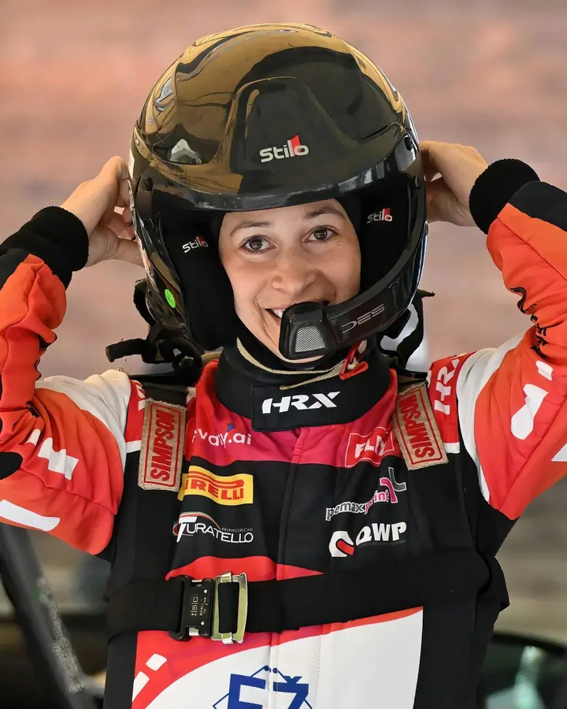
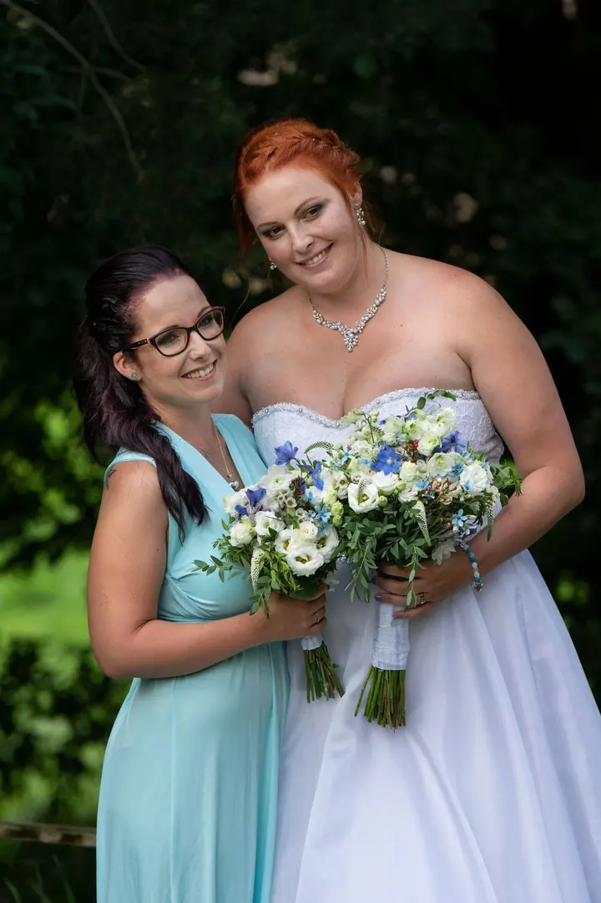
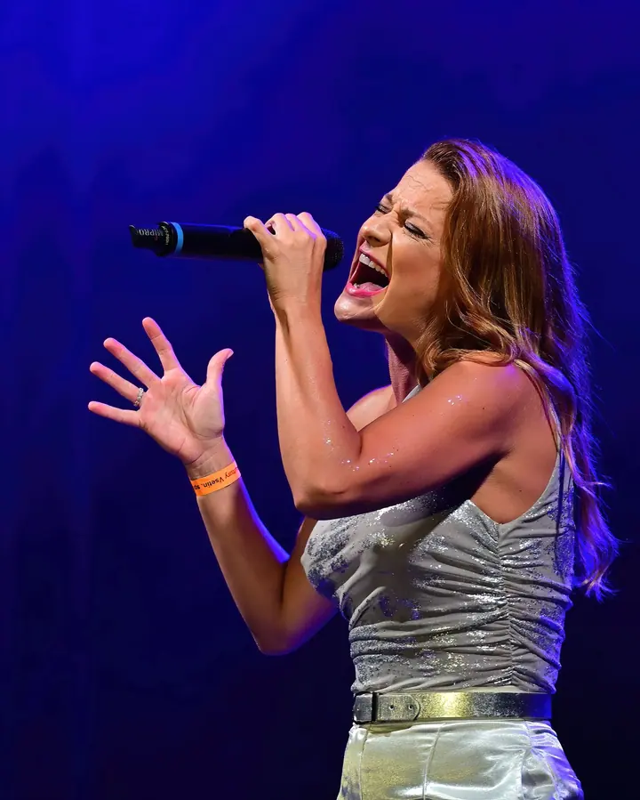
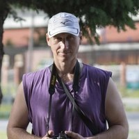

01 / 04
Sportovní fotografie
Fotím turnaje, závody a zápasy, ale víc než výkon mě zajímá člověk. Úsměv, pád, tichý pohled před startem nebo objetí v cíli.
Zeptat se na termín→




Sport tvoří výkony. Lidé tvoří příběhy.
Zeptat se na termín →(01) Ahoj
Jmenuji se Zdeněk Piňos a fotím sport, akce i rodinné chvíle. Mám blíž k lidem než k výkonu, takže hledám okamžiky, které nejsou dokonalé, ale jsou opravdové.
(02) Co fotím
01 / 04
Fotím turnaje, závody a zápasy, ale víc než výkon mě zajímá člověk. Úsměv, pád, tichý pohled před startem nebo objetí v cíli.
Zeptat se na termín→02 / 04
Oslavy, festivaly, koncerty a chvíle, kdy se sejdou lidi. Fotím reportážně, bez divadla a bez nátlaku.
Zeptat se na termín→03 / 04
Křtiny, první svaté přijímání, rodinná setkání nebo obyčejná neděle. Nejde mi o pózy ani aranže, ale o příběhy, které vznikají samy.
Zeptat se na termín→Dále nabízím
Nemusím si říkat svatební fotograf. Když ale chcete mít svatbu zachycenou opravdově a reportážně, rád u toho budu.
↗(04) Postup
Od první zprávy po hotovou galerii.
Krok 1 z 4
Ozvěte se e-mailem nebo přes Instagram či Facebook. Telefon si chráním, ale když to bude dávat smysl, rád se o něj podělím soukromě.
Krok 2 z 4
Turnaj, oslava, křtiny nebo svatba. Popíšete mi, co pro vás ten den znamená, a domluvíme se na podrobnostech.
Krok 3 z 4
Nearanžuji a nerežíruji. Pohybuji se kolem a zachycuji to, co se děje samo, ve smíchu, v pohybu i v tichu.
Krok 4 z 4
Fotky projdu, vyberu ty, které mají duši, upravím je a předám vám je.
Fotím tam, kde to má duši.
(05) Za objektivem
Jsem člověk, kterého baví dívat se kolem sebe. Rád fotím lidi při tom, co milují, a když do toho dávají srdce, dávám ho tam taky. Ať se to odehrává na turnaji, na oslavě, na svatbě nebo při obyčejném setkání.
Někdy si říkám, že jsem jen bývalý karatista, který vyměnil tatami za okraj sportovní haly nebo cílovou rovinku. Jindy zase běžec, který zjistil, že ty nejdelší tratě vedou stejně uvnitř hlavy. Možná proto mě dnes zajímá méně výkon a více člověk.
Nemám sbírku cen, výstav ani diplomů. Fotím srdcem a zkušeností a spoušť zmáčknu ve chvíli, kdy mám pocit, že něco opravdu má smysl. Bez divadla, bez nátlaku, bez hraní.

Zdeněk
Zdeněk Piňos · Sportovní a reportážní fotograf
Rodinné focení začíná od 1 200 Kč, svatby od 10 000 Kč. Sport, akce a portréty počítám podle domluvy. Fotím srdcem, ale i to má svou hodnotu.
Ne. Nejde mi o pózy ani řízené divadlo. Mám raději příběhy, které vznikají samy, tak jak je život opravdu píše.
Sportovní turnaje a závody, oslavy, festivaly, koncerty, svatby, křtiny, první svaté přijímání i rodinná setkání.
Chráním si soukromí. Napsat mi ale můžete kdykoli e-mailem nebo přes sociální sítě a pokud to bude dávat smysl, telefon vám dám.
(07) Kontakt
Napište pár vět o tom, co si představujete, a termín, který se vám hodí.